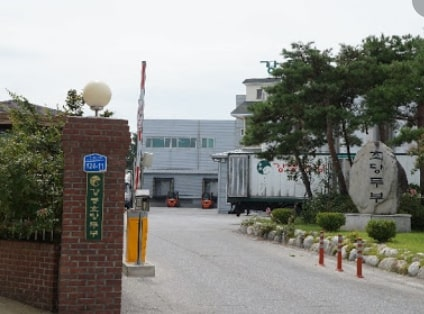
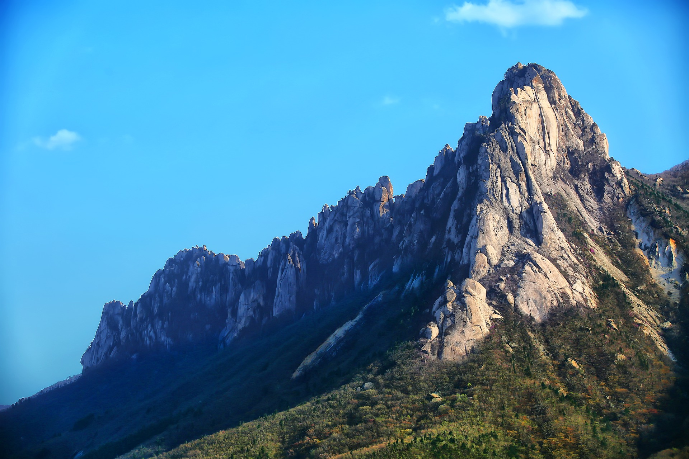
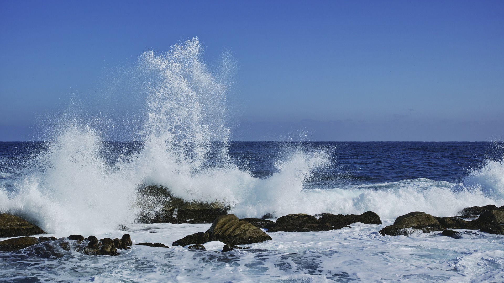

Gangneung Chodang Tofu Village was established to commemorate the production of Chodang Tofu for 400 years.
If you go to Chodang Tofu Village, there are Chodang Tofu restaurants and ice cream stores.
Heo Kyun's father, Heo Yeop, lived in present-day Chodang-dong, Gangneung-si,
and processed beans with a net to season them with clean seawater,
and when it was rumored to taste good, his pen name "Chodang" was added and originated from Chodang.
Currently, the birthplace of Samteojari,
Nanseolheon Heo Cho-hee and Gyosan Heo Gyun in Chodang-dong is preserved as Gangwon-do Cultural Heritage No. 5.
Since then, Chodang Tofu has been introduced.
Mt. Seorak belongs to the Taebaek Mountains.
It is the third highest mountain in South Korea after Hallasan Mountain and Jirisan Mountain.
It was designated as the fifth national park on March 24, 1970.
Seoraksan Mountain has a total area of 398.222 square kilometers.
Rock rock and Ulsan rock are famous.
The rock that shook was actually shaken, but now it is fixed with cement so that it cannot be shaken.
Looking at the East Sea from Ulsan rock, Sokcho-si, police and East Sea a sea view is spectacular.
Baekdamsa Temple and Sinheungsa Temple are located in Seoraksan Mountain,
of which Sinheungsa Temple has to pay a so-called admission fee of cultural assets.
A rail bike is a specially built bicycle along a railroad.
The Jeongseon Rail Bike is a railway bicycle that runs 7.2 km from Gujeolli Station in Jeongseon,
Gangwon Province to Aura.
Jeongseon is a place far from the city center,
but it has beautiful scenery and scenery that cannot be enjoyed in the city center.
It is popular because you can fully feel the scenery.
photo sources https://www.jeongseon.go.kr/tour/jeongseontour/attractions?contentSeq=100&mode=read
Haeparang-road
Road and sea waves in donghae, Gangwon Province.
There are well-organized trails and beaches.
If you follow the trail, you can see the beautiful scenery in turn.
If you go around Ayajin Port, which has a pretty name,
you will meet the rough coastal scenery of Cheongjeongjeong.
Passing through Songji Lake, the home of winter migratory birds,
you will find a traditional house called Yangtong House,
which can only be found in northern Gangwon Province.
Passing through the port of Gaun, Haeparang-gil has farming roads and Cheonbyeon-gil.
Passing Geojin Port, the representative fishing port of Goseong, you will find the sunrise trail.
If you climb the following gentle uphill, you will see Hwajinpo Lake and the sea in front of Hwajinpo.
Passing by Kim Il Sung's villa and Hwajinpo Maritime Museum, you can see the Unification Security Park.The 50-course Jejin checkpoint, the last of Haeparang-gil, to the Unification Observatory section is prohibited from walking.
You have to fill out a registration form and use a vehicle at the Unification Security Park.

Feel the time flows with sand and wind
One of the romantic spot of South Korea

Cool shade, summer on Nami Island. From the north dock to the south. A summer with a deep shade of trees.
Jeongdongjin refers to beaches, beaches, and parks located in Jeongdongjin-ri, Gangdong-myeon, Gangneung-si, Gangwon-do.
It is a very famous place for sunrise. On December 31 every year, people flock to see the New Year's sunrise.
The station is also listed in the Guinness Book of World Records as the closest station to the beach in the world.

There is a huge millennium commemorative sand clock like the picture above, and there is also the "Jeongdongjin Time Museum."
As it is a place that became famous due to the drama called Sandwatch, there are many sand clocks as souvenirs.

On the hillside of Jeongdongjin Beach, there is a four-star hotel built in the form of a ship called the Sun Cruise Resort.
There is also a sculpture park nearby.
The beach is very beautiful from the side of the resort and from the hillside next to the resort near the cliff.
Cool shade, summer on Nami Island. From the north dock to the south. A summer with a deep shade of trees.
Nami Island is an island in Chuncheon, Gangwon-do.
It was developed as a cultural site and a tourist resort with General Nami's grave, and as of 2016,
it is a representative tourist destination in South Korea with a total of 3.3 million visitors annually,
including 1.3 million foreign tourists from 122 countries around the world.
Although it is a small island with a perimeter of about 5 km, it has been famous as an outing site since the 1960s.
In December 2010, it was selected as the 14th UNICEF Child Friendly Park in the world and the first in Korea.

Inside the island, there are convenience facilities such as the Song Museum,
the World National Instrument Exhibition Hall, Pyeonghwa Gallery, Nammun Gallery,
Nami Gallery, Cultural Center, Craft Center, Happy Garden Art Museum, UNICEF Hall, and Andersen Picture Book Center.
The Nami Island Cultural Foundation, an organization in charge of cultural and artistic projects,
holds more than 600 performances, plays, festivals and exhibitions annually,
making it the largest number of cultural performances among domestic tourist attractions.
In the drama Winter Sonata, Bae Yong-joon and Choi Ji-woo are famous
for walking along the Metasequoia Garosu-gil and Ginkgo Tree Road on Nami Island.